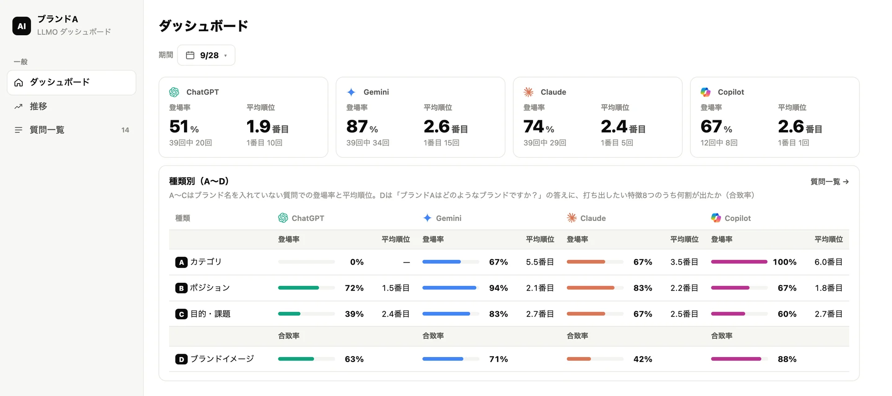
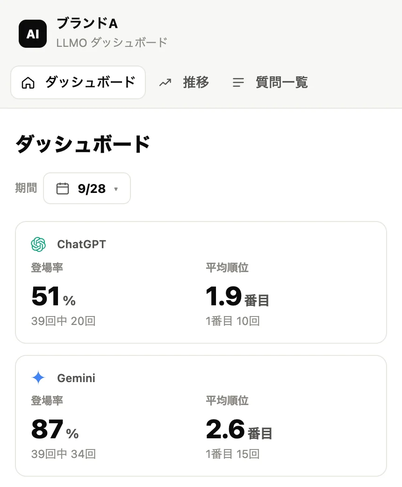
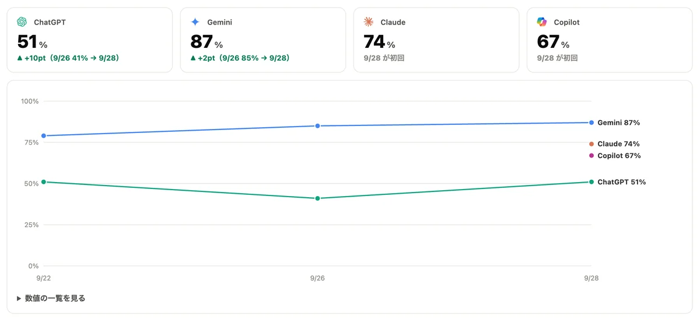
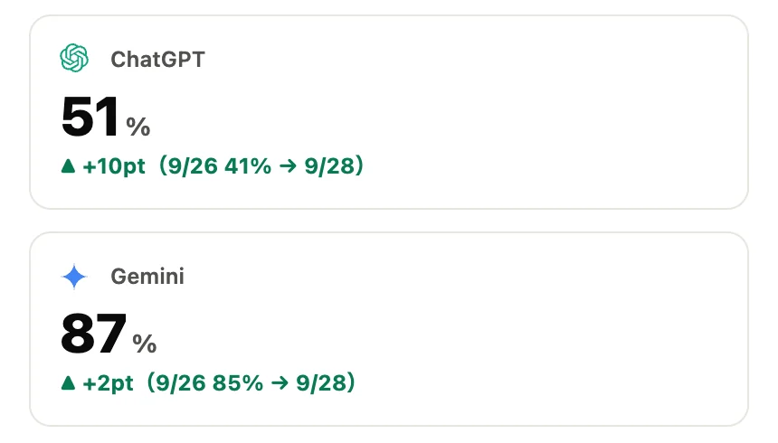

ChatGPT・Gemini・Claude・Copilot の回答を測る
AIの答えに、あなたの名前はあるか。
AIの回答を定点で測り、登場率・平均順位・合致率の3つの指標で、候補入りと説明の正確さを改善します。
※画面はサンプルデータです
Why now
検索の1位でも、
AIの答えに出るとは限らない。
検索エンジンに加えて、生成AIに質問して商品・サービスを比べる人が増えています。検索結果への掲載に加え、AIの回答の中で候補として挙がることが重要になっています。
検索エンジン
AIに聞く
調べる入口が、検索エンジンから生成AIへ広がっています。
キーワード
文章で相談
目的や条件を含めた文章で質問されるようになっています。
サイトの一覧
文章の答え
答えは文章で返り、候補に入らなければ比べる土俵にも乗りません。
Evidence
効くのは被リンクより、
Web上の“言及”。
AI Overviewsでのブランドの見え方と関連が強かったのは、被リンク数よりも、Web上でブランドが語られている数でした。語られた量は測れるので、施策の効果も確かめられます。
AI Overviewsでのブランド可視性との相関
Ahrefsによる2025年5月の調査。相関係数は関連の強さを示すもので、言及を増やした時の効果の大きさや因果関係を示すものではありません。出典：Ahrefs「An Analysis of AI Overview Brand Visibility Factors」
Framework
AIの答えを、
4つの問いに分解する。
同じ「AIに出る」でも、聞かれ方によって打ち手は変わります。質問を4種類に分けて、どこが足りないかを見極めます。
- A
カテゴリ
「〇〇でおすすめは？」
候補に入るための土台。外部の媒体での言及など、情報の接点の広がりが関わります。
- B
ポジション
「〔条件〕に強い〇〇は？」
条件がついた相談で、自社の強みと合うか。件数は少なくても、条件の合う顧客に届きます。
- C
目的・課題
「〔困りごと〕、どうすればいい？」
困りごとから自社へたどり着けるか。強みがユーザー側の言葉で説明されているかが問われます。
- D
ブランドイメージ
「〔社名〕はどんな会社？」
説明の正確さ。強みや提供条件の誤り・抜けを防ぎます。
Aで候補に入る土台をつくり、B・Cで顧客のニーズと自社の強みが合う相談に選ばれる状態をつくり、Dで説明の正確さを保ちます。
Dashboard
出たか。何番目か。
正しく説明されたか。


4つのAIでいちばん低い
4つのAIを、同じ条件で並べる
ChatGPT・Gemini・Claude・Copilotに同じ質問を投げ、取得の条件をそろえて比べます。
- 登場率：質問のうち、名前が出た割合
- 平均順位：出た時に、何番目に挙がったか
- 前回比：伸びているかが一目で分かる


回答の原文と、引用元を残す
AIが何を根拠に答えたかを記録します。誤った説明や古い情報の出どころを特定し、直すべき情報源に手を打てます。
- 回答の原文を保存
- 引用されたURLを一覧に
- 打ち出したい特徴がどれだけ説明されたか（合致率）
※画面はサンプルデータです
Process
測る。整える。追う。
01
測る今の“AIの答え”を知る
- 事業・顧客・競合とポジショニングの整理
- AIへの設問・評価基準・取得条件の設計
- AI回答の初期測定と、外部言及・引用元の調査
02
整えるAIが読む情報をそろえる
- 企業・サービス情報、提供条件・選定理由の明文化
- ページごとの説明の統一と誤認の修正
- 内部リンク・情報構造・構造化データの整備
03
追う毎月測って直す
- AI回答・外部言及・引用元の月次取得と分析
- 目的・課題別FAQの整備と既存コンテンツの更新
- ダッシュボードへの反映と月次レポート
- AI
- ChatGPT・Gemini・
Claude・Copilot - QUESTIONS
- A1問・B6問・C6問・D1問の
計14問 - SAMPLES
- 各設問を各AIで3回
- TIMING
- 初期測定と
1・2・3か月後
Scope
測って終わりにしない。
戦略設計
カテゴリ・ポジショニング・検索需要を整理し、改善の優先順位と目標を決めます。
測定・分析
AI回答の取得・集計、ブランド認識の評価、外部言及・リンク・引用元の調査。
公式情報の整備
企業・サービス情報、価格・対応範囲・保証条件、比較・選定理由の明文化。
技術的な基盤
クロール・インデックスの確認、内部リンク・構造化データの整備。
外部情報の整備
外部媒体の誤認・古い情報への修正依頼、Wikidataなど識別情報の整備。
レポート
月次の測定結果をダッシュボードに反映し、施策と結果の変化を報告します。
追加オプション：ポジション別・課題別の記事、事例制作、短尺動画、PR原稿・配信、デジタルPR、サイト行動・CV分析
- AIによる取得・引用や、回答での掲載・順位を保証するものではありません。
- 外部媒体の掲載・修正、Wikipedia・Wikidataへの掲載は、各管理者・コミュニティの判断に従います。
- AIの回答は時期や条件で変わるため、取得の条件をそろえ、回答の原文と引用URLを保存して評価します。
FAQ
よくある質問
SEOとは何が違いますか
検索結果に載ることに加えて、AIの回答の中で候補に挙がり、強みが正しく説明されることを目指します。そのため、自社サイトの情報に加えて、外部でどう語られているかも見ます。
どのAIを測りますか
ChatGPT・Gemini・Claude・Copilotです。AIごとに回答の傾向や引用元が違うため、サービス別に評価します。
何を、どれくらい測りますか
1社・1ブランド・1カテゴリを対象に、A1問・B6問・C6問・D1問の計14問を、各AIで3回ずつ取得します。初期測定と、施策後1・2・3か月の定点測定で変化を見ます。
AIの回答に必ず載りますか
保証はできません。AIがどの情報を取得・引用するかは各サービスの判断によります。代わりに、測定と改善を繰り返して、候補に挙がりやすく、正しく説明される状態に近づけます。
成果は何で判断しますか
主な指標はDのブランドイメージの特徴の反映率、副指標は事前に選んだB・Cの重点設問でのブランドの登場率です。初期測定のあと、施策の前に重点項目と目標の差分を合意します。